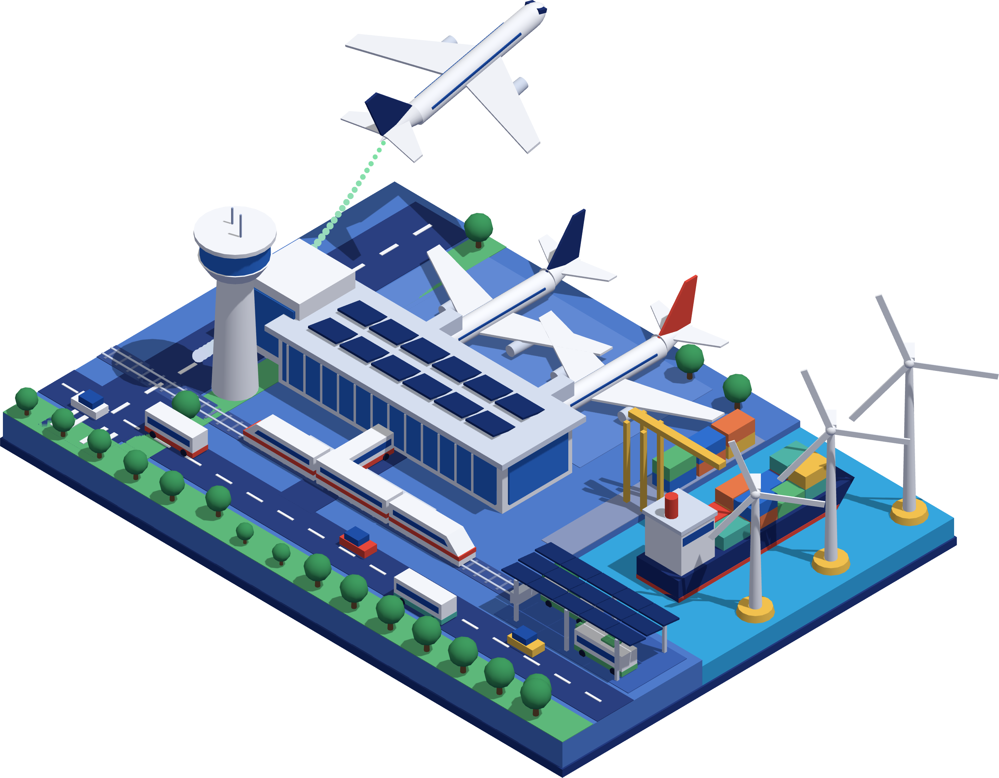

Makassar, 20 Oktober 2026
Kantor Otoritas Bandar Udara Wilayah V Makassar
Rapat Koordinasi Wilayah Kerja
2026
Sinergi Transportasi
Antarmoda
dan
Penurunan Emisi
Gas Rumah Kaca
di Kawasan Bandar Udara